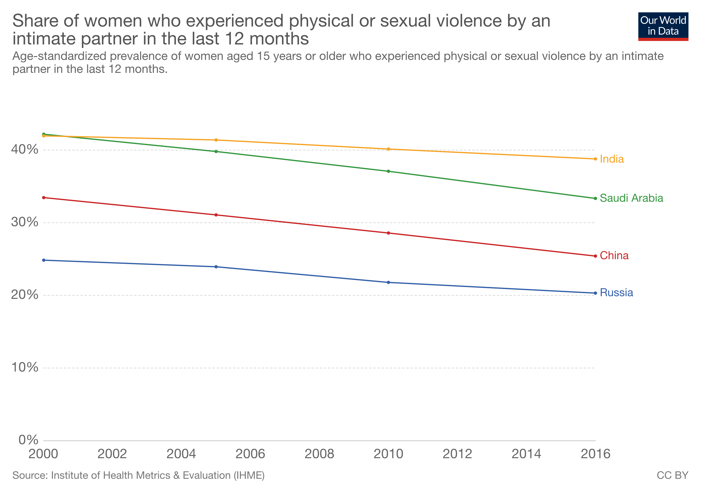
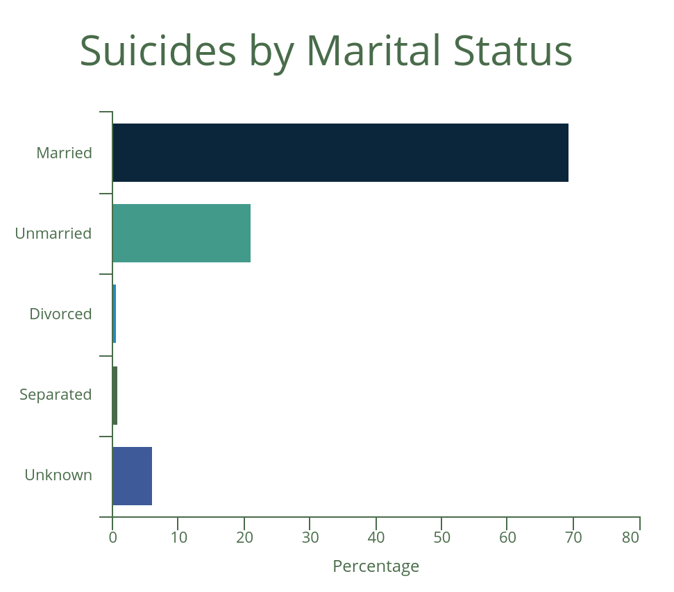
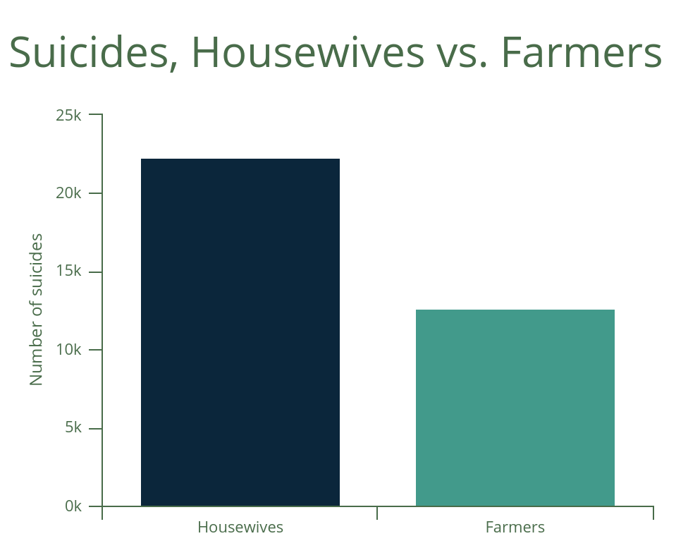

Ever heard the argument that arranged marriages thrive because they hardly result in divorce? Well, it’s pretty common. Many Indian traditionalists often tend to glorify the effectuality of arranged marriages (which constitute 90% of India’s marriages) by pointing to India’s 1% divorce rate. Even western media—given the disappointing rates of marriage failure in the west—have looked up to India’s divorce rate with awe.
The problem with such an outlook is that we forget to ask the main question here. Sure, the low divorce rate tells us that married individuals are sticking to each other without fail. But does it necessarily mean that the individualistic well being of married couples in the country is healthy?
When quality and consequences of marriages in India is put under question, it turns out that according to the data, India’s marital environment could actually be one of the worst in the world.
Sexual violence in marital relationships
The problem of sexual violence among Indian couples is actually more dire than in many other countries like Saudi Arabia and Kuwait, where women’s freedom is highly restricted. Nearly 39% of women in India have been sexually or physically assaulted by an intimate partner, higher than in Saudi Arabia (33%), China (25%) and Russia (20%).
This statistic could be due to a myriad of reasons; while education and patriarchy could be factors, it could also be the lack of autonomy for women—arising from parental and societal oversight—in typical arranged marriages to leave men who choose to sexually coerce, or the lack of incompatibility between two arranged individuals that leads to discontent men who dismiss the well being of their partners (studies have shown that sexual coercion was more prevalent among men who were unhappy).
High suicide rates among married individuals
Despite research on western societies suggesting that marriages offer protection for individuals from suicides, the Indian scenario shows us something completely on the contrary. According to the latest NCRB data, married individuals accounted for nearly 69.5% of the total suicides in India. 70% of males who committed suicide were married.
Housewives have also been committing suicides at alarming rates; the amount of suicides by housewives is almost 1.7 times more than that of farmers. Over half of the Indian women who commit suicides are housewives. Disappointingly, when compared to the scrutiny on farmer suicides, housewives are yet to receive any sort of significant media attention.
Many studies and experts have held the imperishable wedlock due to forced and arranged marriages as a factor for increasing female suicides in India.
Though it hasn’t been firmly established that all or most of these suicides are due to marital problems, what is being further amplified is that marriage is failing to offer any sort of protection from suicides for both men and women, unlike in western societies. This urges us to rethink and interrogate India’s current marital framework in supporting individualistic well-being.
Resorting to divorce rates to conclude that arranged marriages—and Indian marriages in general—are successful would be ignorant of the bigger picture. While more research on India’s marriages is certainly warranted, the existing data points to the many weaknesses of the marital environs. The high rates of sexual violence among couples, and the relative ineffectuality of marriages to support well-being, tells us that the current Indian institution of marriage shouldn't be praised, but must be questioned.